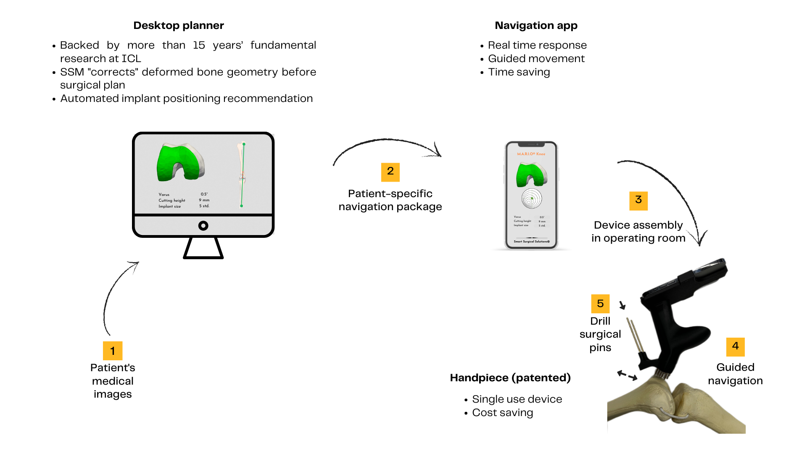

Total knee replacement
Total knee replacement (TKR) to replace joints with osteoarthritis is a highly effective procedure to treat this type of knee pain, resulting in a dramatic reduction in pain, restoration of function, and improved quality of life. In 2019 (pre-COVID), around 100,000 and 1,000,000 surgeries were performed in the UK and the US, respectively. This number is predicted to continue to rapidly increase due to demographic and lifestyle changes, particularly an ageing population, and increasing levels of obesity. Although TKR is a very successful operation overall, inaccuracies in implant positioning and ligament tension of up to 30% have been reported using conventional techniques. This is associated with pain and instability, and is a significant determinant of need for further (revision) surgery (~ 7% of TKRs are revised every year).
A primary total knee replacement costs approximately £6,500 and $10,000 in the UK and US, respectively. More than 80% of these procedures are done using conventional instrumentation which has been the gold standard for more than 20 years. This approach has been found to deliver inaccurate implant positioning in up to 30% of cases, independent of the surgeon’s experience. Indeed, approximately 7% of TKRs are revised every year, a procedure which is technically challenging, and has a high failure rate, with further revision surgery necessary in 22% of these cases within 5 years. Malpositioned knee replacements resulting in post-operative pain and reduced joint function significantly impact patients’ quality of life, as well as impacting their families and carers. There is also a significant impact on society given that these patients are unlikely to return to work. Revision surgery is also expensive, costing £10k on average, and is estimated to cost the NHS £67m annually when wider healthcare costs are considered. These issues are set to become more prevalent as the number of patients requiring knee replacement surgery is predicted to rise significantly in the coming years.
M.A.R.I.O
The navigation device we are developing is easy to use and with no investment required from healthcare providers such as the NHS. The device will help surgeons place implants in the best possible position, ensuring optimum ligament balancing. This is expected to improve patient satisfaction and long-term outcomes. The current M.A.R.I.O system is designed for knee joint replacement but the technology is easily transferable to other joint replacement and orthopaedic procedures. The system consists of a pre-operative surgical planner and navigation software which are provided free of charge. We are confident this will contribute to the surgical training of the next generation of orthopaedic surgeons, improve surgical outcomes and in doing so, reduce the financial burden on the NHS.
